Аннотация
Рассматриваются наблюдательные основания проблемы асимметрии вещества и антивещества во Вселенной. Анализируются восемь относительно независимых наблюдательных каналов: диффузный гамма-фон и аннигиляционные ограничения, антипротоны в космических лучах, тяжёлые антиядра, нейтринный и лептонный сектор, ограничения на антизвёзды и компактные антиматерные объекты, а также космологические бариометры CMB и BBN. Показано, что современные данные сильно ограничивают макроскопическую барионную антиматерию в формах, обычным образом взаимодействующих с веществом, но не исключают редкие компактные антиобъекты, гало-популяции и возможную значительную лептонную асимметрию нейтринного сектора. Рассматриваются также принципиальные экзотические каналы поиска, основанные на поляризационных $P$- и $CP$-нечётных эффектах. Даётся сводная картина открытых наблюдательных вопросов.
Наблюдательные фактология асимметрии вещества и антивещества (PDF)
Введение
Проблема асимметрии вещества и антивещества часто излагается в теоретическом ключе: как задача бариогенеза, нарушения $C$- и $CP$-симметрий, выхода из равновесия и возникновения ненулевого барионного числа. Такая постановка важна, но она уже является вторым шагом. Первый шаг — наблюдательный: почему мы вообще считаем, что Вселенная асимметрична по веществу и антивеществу?
Этот вопрос не сводится к простой констатации «мы состоим из вещества, а не из антивещества». В локальной области это действительно очевидно, но космологический вывод требует большего. Нужно понять, существуют ли сравнимые количества антивещества в других областях наблюдаемой Вселенной; могли ли они быть скрыты в виде антизвёзд, антиоблаков или антигалактик; должны ли такие области проявляться через аннигиляционное излучение; и какие ограничения дают космические лучи, гамма-астрономия, реликтовое излучение (CMB), первичный нуклеосинтез (BBN) и возможная лептонная асимметрия.
Исторически сама возможность такой проблемы возникла не из космологии, а из микрофизики. После появления релятивистской теории Дирака и открытия позитрона антивещество перестало быть математической экзотикой. Если античастицы существуют, то естественно спросить: почему наблюдаемая космическая среда не содержит вещества и антивещества в сравнимых количествах? Уже в 1950–1960-е годы этот вопрос начал переходить из области отдельных спекуляций об «антизвёздах» в область наблюдательной космологии. Работы Голдхабера, Альвена, Клейна, Стейгмана, Зельдовича, Новикова, Долгова и других сформировали раннюю рамку: либо Вселенная действительно асимметрична, либо вещество и антивещество каким-то образом разделены на большие области, границы которых должны быть почти невидимы для наблюдателя.
В традиционной терминологии говорят о барионной асимметрии Вселенной. Этот термин удобен и устоялся, поскольку наиболее надёжно наблюдаемый остаток асимметрии связан именно с барионной компонентой: атомами, ядрами, газом, звёздами и галактиками. Однако физически вопрос шире. Речь идёт не только о барионах как поздних адронных объектах, а о более общем перекосе между частицами и античастицами, который мог затрагивать кварковый, адронный, лептонный и нейтринный сектора ранней Вселенной. Поэтому в дальнейшем, если специально не оговорено иное, под асимметрией вещества и антивещества понимается не только наблюдаемый барионный остаток, но более широкая $C$-асимметрия космического состава.
Наблюдательная картина складывается из нескольких относительно независимых блоков.
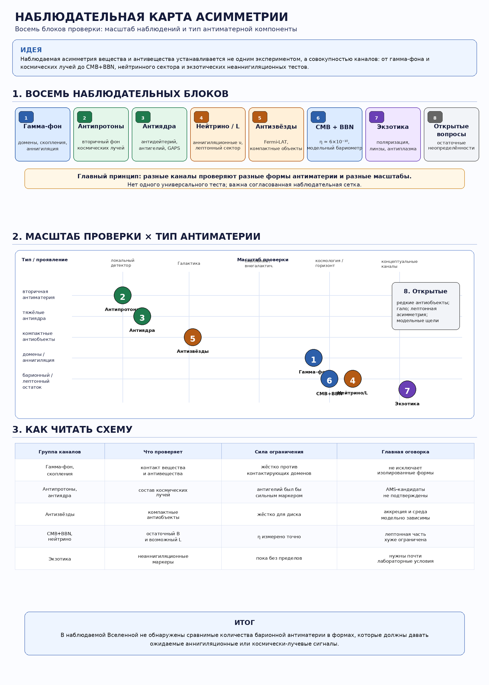
Первый блок — гамма-фон и аннигиляционные ограничения. Если бы в пределах наблюдаемой Вселенной существовали сопоставимые области вещества и антивещества, то на их границах должны были бы происходить процессы аннигиляции. Они порождали бы гамма-излучение, вторичные электроны и позитроны, а также нейтрино. На практике наиболее жёстким оказался именно гамма-канал: современный диффузный гамма-фон, наблюдения скоплений галактик и поиск отдельных гамма-источников сильно ограничивают сценарии, в которых вещество и антивещество образуют контактирующую «лоскутную» структуру внутри видимого горизонта.
Второй блок — космические лучи и антипротоны. Антипротоны наблюдаются, но сами по себе они не являются доказательством существования макроскопических объектов из антивещества. Они естественно возникают как вторичные продукты столкновений обычных космических лучей с межзвёздной средой.
Третий блок — поиск тяжёлых антиядер: антидейтерия, антигелия и более тяжёлых антиядер. Здесь диагностическая сила существенно выше. Вторичное рождение антиядер быстро подавляется с ростом массового числа, поэтому подтверждённое обнаружение антидейтерия или антигелия указывало бы на необычные источники антиматерии.
Четвёртый блок — нейтринный и лептонный сектор. Нейтрино остаются принципиально важными в другом смысле: возможная лептонная асимметрия ранней Вселенной может быть существенно слабее ограничена, чем барионная, и проявляться косвенно через BBN, CMB, $N_{\mathrm{eff}}$, химические потенциалы нейтрино и первичное содержание лёгких элементов.
Пятый блок — ограничения на антизвёзды и компактные антиматерные объекты. Если антизвезда движется через обычную межзвёздную среду, аккреция вещества на её поверхность сопровождается аннигиляционным гамма-излучением. Наблюдения позволяют искать такие источники и получать верхние пределы на возможную долю антизвёзд в Галактике.
Шестой блок — космологическая барионная плотность, определяемая по CMB и BBN. Этот канал даёт численную меру остаточного барионного избытка:
В рамках стандартной горячей космологии это число интерпретируется как остаток после аннигиляции почти симметричной компоненты частиц и античастиц.
Седьмой блок — возможные и экзотические каналы. В принципе возможны поляризационные $P$- и $CP$-нечётные эффекты в атомной среде. В астрофизической постановке такой канал требует почти лабораторно контролируемой конфигурации и сегодня остаётся скорее концептуальной возможностью.
Восьмой блок — открытые вопросы. Современные наблюдения сильно ограничивают макроскопическую антиматерию в формах, которые обычным образом контактируют с веществом. Слабее закрыты редкие компактные антиобъекты, гало-популяции, экзотически изолированные области и возможная большая лептонная/нейтринная асимметрия.
Таким образом, современная наблюдательная ситуация не сводится к одной фразе «антиматерии нет». Более точная формулировка должна быть осторожнее:
В пределах наблюдаемой Вселенной не обнаружено сравнимых с веществом количеств барионной антиматерии. Крупные области антивещества, если они существуют, должны либо находиться за пределами наблюдаемого горизонта, либо быть устроены так, чтобы почти полностью избежать контакта с обычным веществом. Малые количества вторичной антиматерии в космических лучах наблюдаются, но не требуют существования антизвёзд или антигалактик.
Именно поэтому проблема асимметрии вещества и антивещества остаётся не только теоретической, но и наблюдательной. Теория должна объяснить не абстрактный «избыток барионов», а всю совокупность фактов: малое, но ненулевое значение $\eta$, отсутствие ярких аннигиляционных границ, отсутствие подтверждённых антизвёзд, вторичную природу большинства антипротонов, неопределённый статус антигелиевых кандидатов и слабую, но потенциально важную роль нейтринной/лептонной асимметрии.
В этом смысле современная картина продолжает линию вопросов, поставленных ещё в 1950–1960-е годы, но уже на другом наблюдательном уровне. Тогда вопрос звучал как: «может ли Вселенная быть симметричной по веществу и антивеществу?» Сегодня он звучит жёстче:
Какие количества антивещества ещё допустимы наблюдениями, в каких формах они могли бы скрываться, и какие каналы способны отличить фундаментальную космическую асимметрию от локальной сегрегации вещества и антивещества?
1. Гамма-фон и аннигиляционные ограничения
Гамма-канал остаётся главным наблюдательным инструментом для ограничения макроскопических количеств антивещества. Причина проста: если вещество и антивещество соприкасаются, энергия аннигиляции неизбежно уходит в электромагнитный канал, прежде всего через рождение $\pi^0$-мезонов и их распад
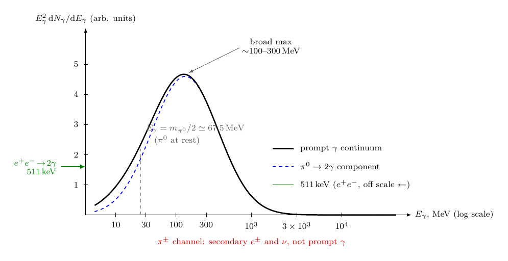
Для $p\bar{p}$-аннигиляции характерен широкий гамма-континуум в диапазоне десятков–сотен МэВ и выше, а не одна узкая линия. Поэтому основной наблюдательный тест — не «найти линию», а ограничить вклад аннигиляции в диффузный гамма-фон и в гамма-излучение конкретных объектов.
1.1. Диффузный гамма-фон: общий бюджет для аннигиляции
Современная опорная величина — измеренный изотропный гамма-фон. В анализе 50 месяцев данных диапазон измерения был расширен до $100\,\text{МэВ}$–$820\,\text{ГэВ}$. Интенсивность изотропного гамма-фона выше $100\,\text{МэВ}$ составила :
с дополнительной систематикой $+15\%/-30\%$, связанной главным образом с моделированием галактического диффузного переднего плана. Спектр хорошо описывается степенным законом с экспоненциальным обрезанием; индекс $\simeq 2{,}32$, энергия обрезания $\simeq 279 \pm 52\,\text{ГэВ}$.
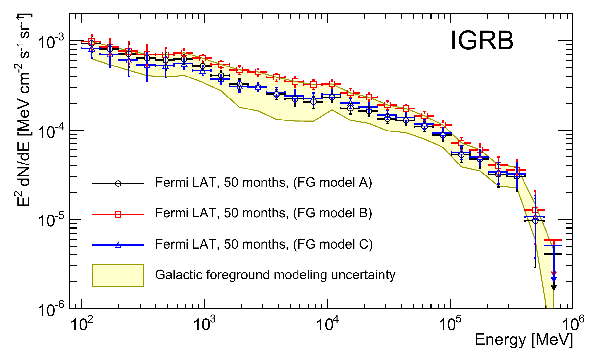
Для антиматерии это означает: любой сценарий с заметной аннигиляцией вещества и антивещества не должен превышать уже измеренный диффузный фон, большая часть которого объясняется обычными астрофизическими источниками — неразрешёнными AGN/блазарами, звездообразующими галактиками и другими популяциями. Поэтому гамма-фон задаёт верхний бюджет для «скрытой» аннигиляции. Обзор прямо формулирует общий итог: гамма-наблюдения пока не обнаружили существенных количеств барионной антиматерии во Вселенной.
1.2. Домены вещества и антивещества
Для сценария «лоскутной» Вселенной из областей вещества и антивещества основной канал — аннигиляция на границах доменов. рассматривали два главных следствия такой картины: вклад в диффузный гамма-фон и искажения CMB. Их вывод: после рекомбинации аннигиляций на границах избежать нельзя, поэтому наблюдаемая Вселенная не может быть обычной смесью matter/antimatter-доменов, если размеры доменов не вынесены на практически горизонтовые масштабы.
В более ранних формулировках часто фигурирует масштаб порядка
как нижний предел на характерный размер областей одинакового состава, получаемый из отсутствия прямых следов аннигиляции. Аргумент Cohen – De Rújula – Glashow (CDG) сильнее простой оценки по локальному гамма-потоку: при учёте CMB и пострекомбинационной динамики фактически исключается «лоскутная» Вселенная внутри наблюдаемого горизонта .
Диффузный гамма-фон исключает не абстрактную возможность антиматерии вообще, а сценарий, в котором вещество и антивещество образуют внутри наблюдаемого горизонта обычную крупномасштабную смесь с контактирующими границами.
1.3. Скопления галактик: горячий газ как тест смешивания
Другой важный канал — горячий внутрикластерный газ. В скоплениях большая часть барионов находится не в звёздах, а в горячей рентгеновской плазме. Если часть этого газа состояла бы из антивещества, столкновения, ответственные за рентгеновское тормозное излучение, одновременно приводили бы к $p\bar{p}$-аннигиляции и гамма-излучению.
использовал эту связь между рентгеновским и гамма-потоками. Для 55 скоплений из flux-limited рентгеновского обзора верхние пределы на долю смешанного вещества/антивещества в горячем газе находятся в диапазоне
Это относится к масштабам отдельных скоплений: массы порядка $10^{14}$–$10^{15}\,M_{\odot}$, размеры порядка нескольких Мпк.
Для сталкивающихся скоплений — в частности, Bullet Cluster — тот же подход позволяет расширить ограничение на более крупные масштабы. Для Bullet Cluster получен предел
При обобщении на другие сталкивающиеся скопления значимые количества антивещества исключаются на масштабах порядка ${\sim}\,20\,\text{Мпк}$, то есть массах порядка ${\sim}\,5\times10^{15}\,M_{\odot}$ .
1.4. Антизвёзды: аккреция обычного вещества
Если в Галактике существуют антизвёзды, они должны взаимодействовать с обычной межзвёздной средой. Аккреция протонов на поверхность антизвезды приводит к аннигиляции и гамма-излучению. Поэтому антизвёзды ищут как необычные гамма-источники со спектром, совместимым с барионной аннигиляцией.
Ключевой современный результат — . По 10-летнему каталогу найдено 14 кандидатов, спектры которых совместимы с аннигиляционной гипотезой, однако не являются подтверждёнными антизвёздами. Для дисковой популяции, похожей на обычные звёзды:
То есть в такой модели — менее одной антизвезды примерно на $4\times10^5$ обычных звёзд.
Для гало-популяции пределы зависят от массы объекта :
1.5. Линия 511 кэВ и лептонная антиматерия
Отдельный гамма-канал — аннигиляция электронов и позитронов,
дающая линию $511\,\text{кэВ}$. Этот канал важен для позитронной астрофизики Галактики, особенно для центральных областей, но он не является прямым доказательством барионной антиматерии. Позитроны могут рождаться множеством обычных астрофизических путей: радиоактивные распады, компактные объекты, пульсары, микроквазары, процессы вблизи центра Галактики. Обзор специально разделяет барионную и лептонную антиматерию в гамма-наблюдениях.
1.6. Что именно закрывает гамма-фон
| Канал | Проверяемый сценарий | Современный статус |
|---|---|---|
| Диффузный гамма-фон | аннигиляция на больших масштабах, вклад в IGRB | $(7{,}2\pm0{,}6)\times10^{-6}$ см$^{-2}$с$^{-1}$ср$^{-1}$ (Fermi-LAT); места для скрытой аннигиляции мало |
| Границы доменов | matter/antimatter лоскутная структура внутри горизонта | исключается, если домены контактируют после рекомбинации |
| Скопления галактик | смешанная рентгеновская плазма вещества и антивещества | $f_{\bar{b}} \lesssim 5\times10^{-9}$–$10^{-6}$ (отдельные скопления) |
| Bullet Cluster | контакт больших барионных систем разного состава | $f_{\bar{b}} < 3\times10^{-6}$; масштаб проверки до ${\sim}\,20\,\text{Мпк}$ |
| Антизвёзды | аккреционная аннигиляция на поверхности антизвезды | 14 кандидатов; $\bar{N}_{\star}/N_{\star} < 2{,}5\times10^{-6}$ для дисковой популяции |
| Линия 511 кэВ | лептонная антиматерия ($e^+$) | важный канал позитронной астрофизики, но не барионной антиматерии |
Гамма-каналы ограничений на антиматерию
Гамма-канал не доказывает «абсолютное отсутствие антивещества». Он доказывает более конкретное:
В наблюдаемой Вселенной нет свидетельств значительных количеств барионной антиматерии, находящейся в обычном контакте с веществом.
Особенно жёстко ограничены: смешанная matter/antimatter-плазма в скоплениях, границы доменов внутри наблюдаемого горизонта и многочисленная популяция антизвёзд в диске Галактики. Слабее ограничены: редкие компактные антиматерные объекты в гало, сильно изолированные антидомены и антиматерия за горизонтом наблюдаемости.
2. Космические лучи: антипротоны как вторичный фон
Антипротоны в космических лучах являются реальным и хорошо измеряемым компонентом, но сами по себе не являются свидетельством макроскопической космической антиматерии. В стандартной картине они возникают как вторичные частицы при столкновениях первичных космических лучей — прежде всего протонов и ядер гелия — с межзвёздным газом:
или аналогично в каналах с ядрами гелия. Поэтому антипротоны — это прежде всего фон, который нужно понимать, прежде чем искать более редкие маркеры вроде антидейтерия или антигелия.
2.1. Что измерено
Ключевой современный эксперимент — на МКС. В публикации 2016 года представил измерение потока антипротонов и отношения $\bar{p}/p$ в диапазоне жёсткости $1$–$450\,\text{ГВ}$, на основе $3{,}49\times10^5$ событий антипротонов и $2{,}42\times10^9$ событий протонов. В диапазоне примерно $60$–$500\,\text{ГВ}$ отношение $\bar{p}/p$ оказалось практически не зависящим от жёсткости .
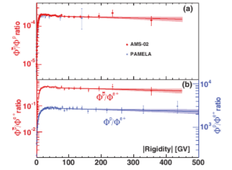
Комментарий. Панель (a) демонстрирует характерное плато $\bar{p}/p \approx \mathrm{const}$ при жёсткостях ${\sim}\,60$–$500\,\mathrm{GV}$ — поведение, ожидаемое для вторичного происхождения, но с нетривиальной плоскостью. Панель (b) показывает, что $\bar{p}/e^+$ и $p/e^+$ ведут себя одинаково как функции жёсткости — то есть антипротоны и протоны составляют единую барионную компоненту, функционально отличную от электронно-позитронной.
Позднее расширил статистику. По данным за первые 11 лет работы было идентифицировано более $1{,}1\times10^6$ антипротонов в диапазоне $1$–$525\,\text{ГВ}$. В этом диапазоне отношение $\bar{p}/p$ остаётся практически постоянным, а поведение антипротонного и протонного спектров близко по жёсткости.
В 2025 году вышла отдельная работа по антипротонам за полный 11-летний солнечный цикл с около $1{,}1\times10^6$ событий в диапазоне $1{,}00$–$41{,}9\,\text{ГВ}$, показывающая временные вариации потока, связанные с солнечной модуляцией .
2.2. Почему это не доказательство антизвёзд или антигалактик
Антипротоны имеют естественный вторичный источник. Поэтому сам факт их обнаружения не требует существования антизвёзд, антиоблаков или антигалактик. Смысл канала таков:
Возможная первичная добавка может обсуждаться в разных моделях: аннигиляция или распад тёмной материи, необычные астрофизические источники, экзотические компактные объекты. Но для темы вещества/антивещества принципиально важно: антипротоны — слишком лёгкий и обычный продукт вторичных столкновений, чтобы служить чистой меткой макроскопической антиматерии. Основная масса измеренных антипротонов согласуется со вторичным происхождением .
2.3. Высокоэнергетическая особенность
При этом антипротонные данные не являются тривиальными. подчёркивает, что при жёсткостях выше примерно $60\,\text{ГВ}$ отношение $\bar{p}/p$ практически постоянно до сотен GV — свойство, не вполне ожидаемое в простейшей картине чисто вторичных антипротонов .
Однако это не означает автоматического обнаружения первичной антиматерии. Теоретическая неопределённость велика: нужно учитывать распространение космических лучей, сечения рождения антипротонов, солнечную модуляцию, систематики детектора и коррелированные ошибки. прямо подчёркивает, что интерпретация антипротонов зависит от прогресса в моделировании вторичного рождения, систематических ошибок и сечений взаимодействия.
Антипротоны являются чувствительным каналом для поиска дополнительной первичной компоненты, но на сегодняшний день они не дают чистого свидетельства макроскопической космической антиматерии.
2.4. Роль солнечной модуляции
Для антипротонов ниже нескольких десятков GV важна не только галактическая физика, но и гелиосфера. Заряженные частицы проходят через солнечный ветер и гелиосферное магнитное поле; их поток у Земли зависит от солнечного цикла и знака заряда. в 2025 году измерил антипротоны по 27-дневным интервалам в течение полного 11-летнего солнечного цикла .
Низкоэнергетический антипротонный поток нельзя напрямую читать как межзвёздный поток; его нужно разворачивать через модель транспорта в гелиосфере.
2.5. Что этот канал ограничивает
Антипротоны полезны в трёх смыслах.
Во-первых, они проверяют модели вторичного рождения антиматерии в космических лучах.
Во-вторых, они ограничивают экзотические первичные источники, включая некоторые модели тёмной материи.
В-третьих, они задают фон для поиска более тяжёлых антиядер. Для антидейтерия и антигелия вторичный фон намного ниже, поэтому именно они являются более перспективными маркерами необычных источников антиматерии.
Но антипротоны не являются хорошим тестом на антизвёзды. Если антизвезда испускает антипротоны, отличить их от вторичных антипротонов крайне трудно. Гораздо информативнее были бы антигелий, антиуглерод или более тяжёлые антиядра: их вторичное производство резко подавлено.
2.6. Сводка по каналу антипротонов
Современный статус канала антипротонов
| Параметр | Значение / статус |
|---|---|
| Основной механизм | вторичное рождение при столкновениях космических лучей с МЗС |
| Главный эксперимент | (МКС, с 2011) |
| Диапазон AMS-02 2016 | $1$–$450\,\text{ГВ}$; $3{,}49\times10^5$ антипротонов |
| Расширённая статистика | ${>}\,1{,}1\times10^6$ антипротонов за 11 лет, до $525\,\text{ГВ}$ |
| Поведение выше ${\sim}\,60\,\text{ГВ}$ | $\bar{p}/p$ практически постоянно |
| Интерпретация | основной поток совместим со вторичным происхождением; субдоминантная первичная компонента под вопросом |
| Значение для асимметрии | антипротоны подтверждают вторичную антиматерию в космических лучах (КЛ), не свидетельствуют о макроскопической антиматерии |
Вывод. Антипротоны — важный, хорошо измеренный, но не решающий канал для проблемы вещества и антивещества. Они показывают, что антиматерия постоянно рождается в высокоэнергетических астрофизических процессах, но эта антиматерия вторична и мала по потоку. Поэтому антипротоны не опровергают асимметрию наблюдаемой Вселенной, а задают фон, на котором следует искать более чистые сигналы: антидейтерий, антигелий и более тяжёлые антиядра.
3. Антиядра: антидейтерий, антигелий, AMS-02, GAPS
Канал антиядер важнее антипротонов именно потому, что с ростом массового числа резко падает вероятность вторичного рождения в обычных столкновениях космических лучей с межзвёздным газом. Поэтому антипротон — ожидаемый вторичный фон, антидейтерий — уже редкий и чувствительный маркер, а антигелий, особенно ${}^4\overline{\mathrm{He}}$, был бы чрезвычайно труден для объяснения стандартной астрофизикой.
3.1. Иерархия диагностической силы
В космических лучах ожидается следующая логика:
Чем тяжелее антиядро, тем сильнее подавлено его вторичное производство. Для темы асимметрии вещества и антивещества это означает:
| Частица | Статус как маркера антиматерии |
|---|---|
| $\bar{p}$ | обычный вторичный фон |
| $\bar{d}$ | возможный чувствительный маркер новой физики или необычных источников |
| $\overline{{}^3\mathrm{He}}$ | очень сильный маркер, если подтверждён |
| $\overline{{}^4\mathrm{He}}$ | практически «красный флаг»: стандартное вторичное происхождение крайне маловероятно |
3.2. Антидейтерий: пока не обнаружен
Космический антидейтерий на сегодняшний день не обнаружен. В 2024 году опубликован поиск антидейтеронов космического происхождения; кандидатов не найдено, и получен верхний предел на поток:
в диапазоне кинетических энергий $0{,}163$–$1{,}100\,\mathrm{GeV/n}$. Этот результат улучшил прежний предел BESS97–00, составлявший $1{,}9\times10^{-4}\,(\mathrm{m^2\,s\,sr\,GeV/n})^{-1}$.
Антидейтерий остаётся незакрытым каналом: его пока не видели, но именно низкоэнергетический антидейтерий считается одним из наиболее чистых возможных сигналов нестандартных источников антиматерии, поскольку вторичный астрофизический фон в этой области мал.
3.3. AMS-02: антигелиевые кандидаты есть, подтверждённой публикации нет
AMS-02 — главный действующий магнитный спектрометр для поиска редких антиядер на МКС. Он работает с 2011 года и собрал более 200 миллиардов событий космических лучей. В конференционных докладах сообщалось о нескольких кандидатах в антигелий — событиях в массовых областях $\overline{{}^3\mathrm{He}}$ и $\overline{{}^4\mathrm{He}}$, при жёсткостях ниже ${\sim}\,50\,\text{ГВ}$, с частотой порядка одного антигелиевого события на ${\sim}\,10^8$ обычных ядер гелия.
AMS-02 сообщал о кандидатах в антигелий на конференциях, однако на сегодняшний день это не является опубликованным подтверждённым открытием космического антигелия.
3.4. Почему антигелий так важен
По оценкам, вторичный $\overline{{}^3\mathrm{He}}$ обычно на 1–2 порядка ниже чувствительности за 5 лет наблюдений. Для $\overline{{}^4\mathrm{He}}$ разрыв составляет примерно 5 порядков:
3.5. GAPS: независимый низкоэнергетический канал
GAPS использует принципиально иной метод регистрации: образование экзотического атома, де-эксцитацию с характерными рентгеновскими переходами и последующую ядерную аннигиляцию. Первый антарктический полёт состоялся 16 декабря 2025 — 9 января 2026 года (около 25 дней на высоте ${\sim}\,35\,\mathrm{км}$). Собрано около $5\times10^8$ событий.
GAPS перешёл от проекта к реальному набору данных, но результаты поиска антидейтерия и антигелия по первому полёту ещё должны быть опубликованы.
3.6. Что даёт этот канал для проблемы асимметрии
| Канал | Статус | Значение |
|---|---|---|
| $\bar{d}$ | не обнаружен; BESS-Polar II: $<6{,}7\times10^{-5}$ | чистый низкоэнергетический канал новой физики |
| $\overline{{}^3\mathrm{He}}$ | есть кандидаты AMS-02, нет рецензируемой публикации | потенциально сильный маркер, требует проверки |
| $\overline{{}^4\mathrm{He}}$ | возможные кандидаты обсуждались, не подтверждены | подтверждение несовместимо со стандартным вторичным происхождением |
| GAPS | первый полёт 2025/26, данные собраны | независимый низкоэнергетический тест |
| AMS-02 | продолжает набор данных; ${>}\,200$ млрд событий | главный магнитный спектрометр для редких антиядер |
Вывод. Антиядра — наиболее чувствительный прямой канал для поиска редкой барионной антиматерии в космических лучах. На сегодняшний день антидейтерий не обнаружен, антигелий остаётся на уровне неподтверждённых кандидатов, а GAPS только что дал первый независимый низкоэнергетический набор данных.
4. Нейтринный канал: аннигиляционные нейтрино и лептонная асимметрия
Нейтринный канал в теме асимметрии вещества и антивещества распадается на две разные задачи:
1. аннигиляционные нейтрино — нейтрино как продукты $p\bar{p}$-аннигиляции при контакте вещества и антивещества;
2. лептонная/нейтринная асимметрия — возможный избыток $\nu$ над $\bar{\nu}$ в ранней Вселенной, влияющий на BBN, CMB и $N_{\mathrm{eff}}$.
Эти две темы важно не смешивать. Первая относится к поиску современной макроскопической антиматерии. Вторая — к скрытому зарядовому балансу ранней плазмы.
4.1. Аннигиляционные нейтрино
При барион-антибарионной аннигиляции рождаются не только $\gamma$-кванты. Типичная цепочка включает заряженные пионы:
Таким образом, нейтрино — неизбежный продукт аннигиляции вещества и антивещества. В обзоре нейтрино прямо включаются в набор наблюдательных тестов антиматерных космологий.
Однако в современной практике этот канал оказался слабее гамма-канала:
| Причина | Следствие |
|---|---|
| Нейтрино слабо взаимодействуют | малая статистика событий |
| Энергии от $p\bar{p}$-аннигиляции — десятки–сотни МэВ | сложный фон: атмосферные, солнечные, нейтрино от сверхновых |
| Угловое разрешение хуже, чем в гамма-астрономии | трудно связать сигнал с конкретной границей доменов |
| Аннигиляция одновременно даёт $\gamma$-канал | гамма-ограничения обычно оказываются жёстче |
Причины слабости нейтринного канала для поиска макроскопической антиматерии
Нейтрино остаются физически обязательным продуктом аннигиляции вещества и антивещества, но на сегодня не являются ведущим каналом ограничения антизвёзд, антигалактик или matter–antimatter-доменов.
Современная нейтринная астрономия действительно стала мощной областью, но её «аннигиляционный» инструментарий в основном применяется к другой задаче — поискам аннигиляции тёмной материи по данным Super-Kamiokande, IceCube, ANTARES и будущих установок .
4.2. Реликтовый нейтринный фон
Стандартная горячая космология предсказывает реликтовый нейтринный фон ($C\nu B$). Прямого его обнаружения пока нет, но его существование косвенно подтверждается согласованностью BBN, CMB и крупномасштабной структуры. Для темы асимметрии это важно потому, что возможная большая лептонная асимметрия после $e^+e^-$-аннигиляции при условии электрической нейтральности Вселенной должна фактически сидеть в нейтринном секторе: заряженные лептоны не могут нести большой нескомпенсированный заряд.
прямо формулируют этот пункт: космологическая лептонная асимметрия пока ограничена слабо и может быть значительно больше барионной; если это так, зарядовая нейтральность требует, чтобы большая лептонная асимметрия находилась в нейтринном секторе.
4.3. Как нейтринная асимметрия влияет на BBN
Нейтринная асимметрия обычно параметризуется химическим потенциалом:
Она влияет на BBN двумя путями.
Первый — через общую плотность релятивистской энергии: большой $\xi_\nu$ увеличивает вклад нейтрино в радиационную плотность, что описывается через изменение $N_{\mathrm{eff}}$.
Второй — через баланс слабых реакций, особенно для электронных нейтрино:
Именно $\nu_e/\bar{\nu}_e$-асимметрия влияет на отношение $n/p$, а значит на первичное содержание ${}^4\mathrm{He}$. подчёркивают, что ограничения на лептонные асимметрии требуют решения нейтринных транспортных уравнений с учётом осцилляций ароматов.
4.4. CMB: чувствительность есть, но слабее, чем хотелось бы
CMB чувствителен к нейтринному сектору через три основных канала.
Эффективное число нейтрино $N_{\mathrm{eff}}$ параметризует суммарную плотность релятивистских степеней свободы в ранней Вселенной помимо фотонов. Стандартная модель предсказывает $N_{\mathrm{eff}}^{\mathrm{SM}}
= 3{,}0440 \pm 0{,}0002$; отклонение от этого значения указывает на нестандартные релятивистские компоненты — в частности, на дополнительную энергию нейтринного сектора, связанную с лептонной асимметрией.
Сумма масс нейтрино $\sum m_\nu$ влияет на темп роста крупномасштабной структуры и форму акустических пиков: массивные нейтрино меньше кластеризуются и подавляют рост флуктуаций на малых масштабах.
Влияние свободно распространяющихся релятивистских частиц проявляется в фазовом сдвиге акустических пиков CMB: нейтрино, будучи свободно-пробегающими после отрыва от плазмы, создают характерный сдвиг положений пиков, который измеряется независимо от $N_{\mathrm{eff}}$.
Однако CMB не является прямым измерителем $\nu$-$\bar{\nu}$-асимметрии. Ограничение на лептонную асимметрию идёт в основном косвенно:
где $\xi_\nu \equiv \mu_\nu / T_\nu$ — химический потенциал нейтрино в единицах температуры, $\rho_\nu$ — плотность энергии нейтринного сектора, $C_\ell$ — угловой степенной спектр CMB. Иными словами, лептонная асимметрия влияет на CMB только через изменение общей радиационной плотности, но не через знак $\nu$-$\bar{\nu}$-дисбаланса.
, решая полные квантовые кинетические уравнения для (анти)нейтрино в формализме замкнутого временноо́го контура, получают полный вид зависимости эффективного числа нейтрино от лептонной асимметрии:
где первое слагаемое — стандартный SM-вклад, второе — термальный вклад в приближении мгновенной отвязки, а последнее $0{,}0102\,\xi_\nu^{2}$ — поправка на неинстантанность отвязки в присутствии асимметрии. Все вклады — чётные функции $\xi_\nu$: $C$-сопряжённая симметрия делает знак химического потенциала ненаблюдаемым через $N_{\mathrm{eff}}$, и CMB способен ограничить только модуль лептонной асимметрии.
Современные ограничения по $\xi_\nu$ остаются мягкими. Из объединённого анализа с данными EMPRESS BBN, Planck CMB и BOSS BAO следует $\xi_\nu = 0{,}024 \pm 0{,}012$, причём EMPRESS-данные по первичному гелию $Y_P$ при фиксированной барионной плотности предпочитают положительную асимметрию $0{,}032 \leq \xi_\nu \leq 0{,}052$. В единицах барионной асимметрии $\eta_b \sim 6\times10^{-10}$ это соответствует $\xi_b \sim 10^{-9}$ — то есть лептонная асимметрия нейтринного сектора может превышать барионную примерно на семь порядков и при этом находиться в пределах наблюдательной допустимости.
4.5. Насколько лептонная асимметрия может быть больше барионной
Барионная асимметрия измерена очень точно:
.
Для лептонной асимметрии ситуация совсем другая. Современные ограничения остаются на много порядков слабее барионного измерения. Даже будущие CMB-S4 / Simons Observatory, улучшив чувствительность, будут зондировать значения $\xi_\nu$, всё ещё на много порядков превышающие барионную асимметрию .
Это принципиально важный пункт:
Барионная часть асимметрии жёстко измерена, а лептонная/нейтринная часть остаётся значительно менее жёстко ограниченной.
4.6. Сводка нейтринного канала
| Канал | Что проверяет | Статус |
|---|---|---|
| Аннигиляционные $\nu$ от $p\bar{p}$ | контакт вещества и антивещества | физически неизбежны; наблюдательно слабее гамма-канала |
| $C\nu B$ | стандартный реликтовый нейтринный фон | прямого обнаружения нет; косвенно подтверждается BBN+CMB+LSS |
| $N_{\mathrm{eff}}$ | радиационная плотность, включая нейтрино | ограничивает энергию нейтринного сектора, но не $\nu$-$\bar{\nu}$ напрямую |
| $\xi_{\nu_e}$ | электронная нейтринная асимметрия | влияет на $n/p$ и ${}^4\mathrm{He}$ в BBN |
| $\xi_\nu$ всех ароматов | общая нейтринная асимметрия | ограничения модельно-зависимы; нужны транспорт и осцилляции |
| CMB-S4 / Simons Obs. | $N_{\mathrm{eff}}$, $Y_p$, демпинговый хвост | улучшат пределы, но не до уровня барионной асимметрии |
Нейтринный канал: что закрывает и чего не закрывает
Вывод. Нейтрино не стали тем прямым инструментом поиска макроскопической антиматерии, каким они могли казаться в ранних обсуждениях. Для антидоменов и антизвёзд главным остаётся гамма-канал. Но нейтринный сектор принципиально важен по другой причине: он является единственным естественным местом, где может скрываться большая лептонная асимметрия при сохранении электрической нейтральности Вселенной.
5. Ограничения на антизвёзды и компактные антиматерные объекты
Этот блок лучше отделить от общего гамма-фона. Гамма-фон ограничивает диффузную аннигиляцию и границы доменов, а антизвёзды и компактные антиматерные объекты — другой случай: антивещество может быть собрано в плотный самогравитирующий объект, и тогда аннигиляция идёт в основном на поверхности, при контакте с обычной межзвёздной средой.
5.1. Почему компактные объекты труднее исключить
Если антивещество находится в виде разреженного газа или облака, то при контакте с обычным веществом аннигиляция идёт по объёму. Такой сценарий даёт сильный гамма-сигнал и жёстко ограничивается.
Для антизвезды ситуация другая. Аннигиляция происходит только там, где обычное вещество аккрецирует на поверхность антизвезды:
Поэтому сигнал зависит не только от существования антизвезды, но и от:
- плотности межзвёздной среды;
- скорости антизвезды относительно газа;
- массы и радиуса объекта;
- эффективности аккреции;
- локального магнитного поля;
- наличия собственного антизвёздного ветра.
Гамма-светимость антизвезды оценивается через аккрецию обычного газа по механизму Бонди–Хойла–Литтлтона:
Это принципиально: быстрая антизвезда в разреженной среде будет существенно слабее как гамма-источник, чем медленная антизвезда в плотном газе .
Следует также отметить эффект самоограничения аккреции: аннигиляционное гамма-излучение создаёт радиационное давление, способное частично «выдувать» набегающий газ, что дополнительно снижает эффективную светимость.
Именно поэтому компактные антиматерные объекты слабее ограничены, чем разреженные антидомены.
5.2. Fermi-LAT: 14 кандидатов и верхний предел на долю антизвёзд
Ключевой современный результат — , использующий 10-летний каталог источников . Авторы искали неидентифицированные гамма-источники со спектром, совместимым с барион-антибарионной аннигиляцией. Результат — $N_{\mathrm{cand}} = 14$ кандидатов в антизвёзды.
Важно: это не открытие антизвёзд. Это источники, которые:
- не имеют ассоциации с известными классами гамма-источников;
- имеют спектр, совместимый с аннигиляцией;
- но могут иметь обычное астрофизическое объяснение.
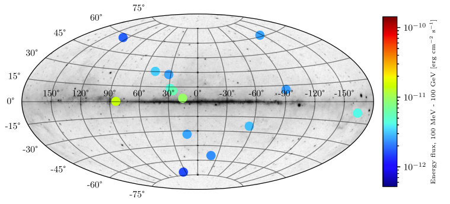
Комментарий. Все 14 кандидатов тяготеют к высоким галактическим широтам — что согласуется с ожидаемым преимуществом чувствительности LAT вне галактической плоскости (см. рис. 5). Ни один из кандидатов не образует пространственного скопления и не ассоциирован с известными классами гамма-источников. Их природа остаётся неустановленной.
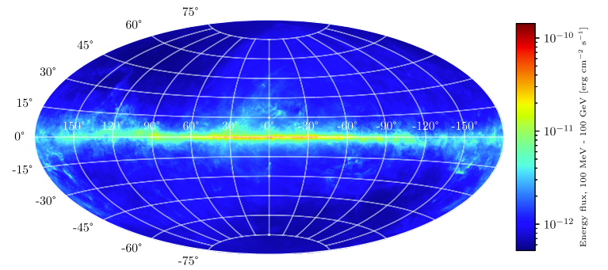
Комментарий. Чувствительность резко ухудшается вблизи галактической плоскости — там доминирует диффузное галактическое гамма-излучение. Именно поэтому ограничения на антизвёзды в диске сильнее зависят от модели аккреции, чем ограничения для гало-популяции.
На основе этих кандидатов и чувствительности LAT получены верхние пределы для дисковой популяции:
То есть менее одной антизвезды примерно на $4\times10^5$ обычных звёзд. Это примерно в 20 раз жёстче прежних ограничений.
5.3. Зависимость пределов от модели популяции
Предел $\bar{N}_{\star}/N_{\star} < 2{,}5\times10^{-6}$ относится к конкретной гипотезе: антизвёзды распределены примерно как обычная звёздная дисковая популяция и аккрецируют обычный межзвёздный газ. Для гало-популяции пределы слабее и зависят от массы :
хорошо ограничивает антизвёзды, которые эффективно аккрецируют обычный газ. Но компактные антиобъекты в разреженной среде, в гало или с подавленной аккрецией могут быть намного менее заметны.
5.4. Компактные антиматерные объекты в моделях неоднородного бариогенеза
Отдельная линия — не обычные антизвёзды, возникшие как зеркальная версия звёздной популяции, а компактные антиматерные объекты, образованные в ранней Вселенной в сценариях неоднородного бариогенеза. рассматривают «baryo-dense» объекты, которые могли возникать в расширенных сценариях Affleck–Dine-бариогенеза.
Их вывод принципиально отличается от простого «антизвёзд быть не может»: современные наблюдения не исключают значительное количество компактных антиматерных объектов в Галактике, если они находятся в формах, плохо взаимодействующих с обычной средой.
5.5. Рентгеновские сигнатуры: узкие линии антипротонных атомов
Помимо гамма-континуума от $\pi^0$-распадов, предложен более специализированный канал: рентгеновские линии от экзотических атомов, возникающих перед аннигиляцией. Если обычный протон или ядро гелия попадает в антизвёздную среду, возможно образование экзотических атомов $p\bar{p}$ и ${}^4\mathrm{He}\bar{p}$. Перед аннигиляцией они каскадируют вниз по уровням и испускают узкие рентгеновские линии. указывают наиболее важные из них: $$\begin{aligned} p\bar{p}:\quad & 1{,}73\,\text{кэВ} \quad \text{(переход $3p$--$2p$)}, \quad \text{выход} > 90\%, \\ {}^4\mathrm{He}\bar{p}:\quad & 4{,}86\,\text{кэВ} \quad \text{(переход $4$--$3$)}, \quad \text{выход} \sim 60\%, \\ {}^4\mathrm{He}\bar{p}:\quad & 11{,}13\,\text{кэВ} \quad \text{(переход $3$--$2$)}, \quad \text{выход} \sim 25\%. \end{aligned}$$ Такие линии могут быть проверены рентгеноспектроскопическими миссиями — XRISM, Athena, eROSITA.
5.6. Антизвёзды как возможный источник антигелия
Интерес к антизвёздам усилился после сообщений о кандидатах в антигелий. Если антигелий будет подтверждён, стандартное вторичное производство будет трудно принять как единственное объяснение. Один из возможных источников — антизвёзды или антизвёздные скопления, выбрасывающие антиядра через антизвёздные ветры или взрывы. прямо мотивируют свою работу возможными антигелиевыми кандидатами .
5.7. Сводная таблица
| Канал | Что ищет | Числа / статус | Источник |
|---|---|---|---|
| Fermi-LAT 4FGL | гамма-континуум от аккреции на антизвезду | 14 кандидатов | (2021) |
| Дисковая популяция | доля антизвёзд среди обычных звёзд | $\bar{N}_{\star}/N_{\star} < 2{,}5\times10^{-6}$, 95% CL | там же |
| Гало-популяция | примордиальные антизвёзды | $<0{,}2$ ($1\,M_{\odot}$); $<1{,}6\times10^{-4}$ ($10\,M_{\odot}$) | (2021) |
| Baryo-dense объекты | компактные антиобъекты раннего происхождения | не полностью исключены; сильно модельно-зависимо | (2015) |
| Рентгеновские линии | экзотические $p\bar{p}$, ${}^4\mathrm{He}\bar{p}$ атомы | 1,73; 4,86; 11,13 кэВ | (2022) |
Вывод. Ограничения на антизвёзды сильные, но не абсолютные. Жёстко ограничена многочисленная дисковая популяция антизвёзд, похожая на обычные звёзды и эффективно аккрецирующая межзвёздный газ ($\bar{N}_{\star}/N_{\star} < 2{,}5\times10^{-6}$). Слабее ограничены гало-популяции, быстрые объекты в разреженной среде, компактные антиобъекты с малой аккрецией и объекты раннего происхождения в неоднородных сценариях бариогенеза.
Наблюдения не обнаружили подтверждённых антизвёзд и сильно ограничили их обычную дисковую популяцию. Однако редкие компактные антиматерные объекты в гало или в сценариях раннего неоднородного бариогенеза остаются менее жёстко исключёнными. Для их поиска могут быть важны не только гамма-континуум, но и антиядра в космических лучах, а также узкие рентгеновские линии экзотических антипротонных атомов.
6. CMB + BBN: численная мера барионного остатка
Одним из наиболее точных количественных оснований для обсуждения асимметрии вещества и антивещества является не прямой поиск антизвёзд и не гамма-излучение от аннигиляции, а измерение современной барионной плотности. В стандартной горячей космологии почти вся симметричная компонента «частица–античастица» должна была аннигилировать, оставив небольшой избыток вещества. Этот избыток удобно характеризовать отношением числа барионов к числу реликтовых фотонов:
Иначе говоря, на каждый современный барион приходится примерно $1{,}6\times10^9$ реликтовых фотонов.
Важно подчеркнуть: CMB и BBN не являются прямыми наблюдательными каналами поиска удалённой антиматерии. Их задача другая: они измеряют эффективную плотность барионной компоненты, участвовавшей в ранней тепловой истории.
6.1. CMB: барионная плотность из акустических пиков
Реликтовое излучение измеряет барионную плотность не химически, а динамически. Барионы входили в фотон-барионную плазму до рекомбинации и меняли высоты и форму акустических пиков. Финальные данные Planck для базовой $\Lambda$CDM-модели дают :
В той же работе, при комбинации с BAO:
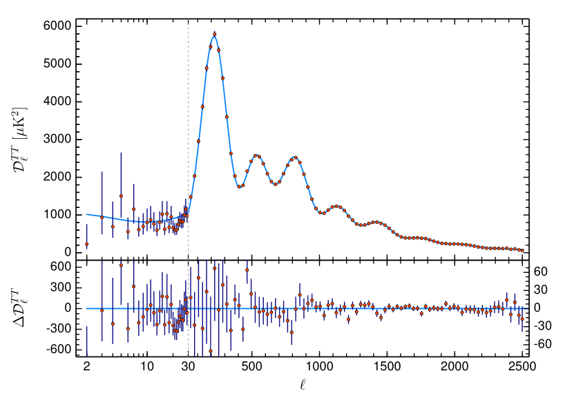
Комментарий. Спектр наглядно демонстрирует семь акустических пиков — каждый последующий несёт информацию о барионной плотности. Нечётные пики (1, 3, 5…) усилены барионной нагрузкой, чётные (2, 4, 6…) — подавлены. Именно эта асимметрия высот пиков позволяет CMB независимо от BBN измерять $\Omega_b h^2 \simeq 0{,}0224$. Провал вблизи $\ell \sim 20$–$30$ — повторяющаяся особенность, наблюдавшаяся ещё WMAP и не объяснённая в рамках базовой $\Lambda$CDM.
CMB фиксирует, сколько обычной барионной компоненты осталось в той части Вселенной, которая участвовала в формировании фотон-барионной плазмы. Он не «видит» антиматерию напрямую и не различает удалённые компактные антиобъекты. В рамках стандартной горячей модели измеренная барионная плотность интерпретируется как остаточный избыток вещества после аннигиляции почти симметричной компоненты.
6.2. BBN: независимая проверка через лёгкие элементы
Первичный нуклеосинтез даёт независимую проверку той же величины $\eta$. Особенно чувствительным бариометром является дейтерий: при большей барионной плотности дейтерий эффективнее «сгорает» в более тяжёлые ядра, поэтому остаточное отношение D/H уменьшается.
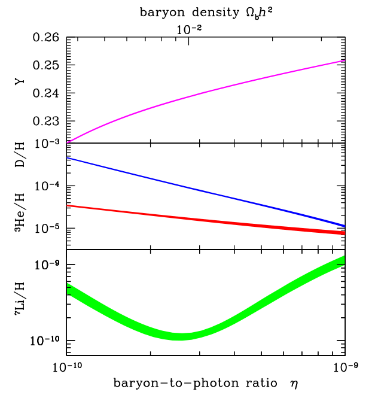
Комментарий. Узкая вертикальная полоса CMB-определения $\Omega_b h^2 = 0{,}02225 \pm 0{,}00016$ проходит через $\eta_{10} \approx 6{,}10$. При этом значении предсказания BBN для $D/H$ и $Y_p$ согласуются с астрофизическими наблюдениями с точностью лучше $1\sigma$ — это нетривиальный тест согласованности горячей космологии, поскольку BBN ($z \sim 10^{10}$) и CMB ($z \sim 10^3$) измеряют барионную плотность совершенно разными методами. Однако предсказание $^7$Li/H в этой же точке примерно в три раза превышает наблюдаемую распространённость в металло-бедных гало-звёздах — это и есть «литиевая проблема», которая не объясняется в рамках стандартной BBN ни ядерными поправками, ни наблюдательными систематиками. $^4$He — слабый бариометр (логарифмическая зависимость от $\eta$), но чувствителен к $N_\nu$ через темп расширения и температуру замерзания слабых реакций. Расхождение для $^6$Li (внизу) на данный момент снято: ранние заявленные детектирования в спектрах гало-звёзд объясняются 3D non-LTE эффектами стеллярной атмосферы.
Современные обновления BBN подчёркивают, что выводимая барионная плотность чувствительна к выбранным скоростям реакций сжигания дейтерия: теоретические ab initio скорости тянут к меньшим значениям, а экспериментально определённые — к большим. В обновлении 2024 года при маргинализации по широкому набору ядерных скоростей :
Следовательно, BBN — независимая проверка барионной плотности, но его вывод также зависит от ядерных скоростей, наблюдательной оценки первичного содержания лёгких элементов и предположения о стандартной радиационно-доминированной эволюции.
6.3. Модельная зависимость канала CMB + BBN
Данные CMB измеряют барионную инерционную нагрузку фотон-барионной плазмы до рекомбинации. Из формы акустических пиков извлекается $\Omega_b h^2$, затем при заданной температуре реликтового излучения и стандартной тепловой истории он переводится в отношение $\eta = n_b/n_\gamma$. Такой перевод предполагает стандартную рекомбинацию, фридмановскую геометрию, стандартный вклад релятивистских степеней свободы и отсутствие экзотических компонентов.
CMB+BBN дают не прямое обнаружение отсутствия антиматерии, а согласованную модельно-зависимую оценку остаточной барионной плотности в рамках стандартной горячей космологии. Эта оценка очень жёсткая внутри $\Lambda$CDM + стандартного BBN, но сама по себе не исключает редкие антизвёзды, изолированные антиобъекты или экзотические сценарии поздней сегрегации вещества и антивещества.
6.4. Что именно даёт этот канал
CMB+BBN фиксируют ненулевую эффективную барионную плотность компоненты, участвовавшей в формировании фотон-барионной плазмы, первичных лёгких элементов, газа, звёзд и галактик:
Но сам по себе канал CMB+BBN не является прямым поиском удалённой антиматерии.
6.5. Что этот блок не закрывает
- Не исключает редкие антизвёзды или компактные антиобъекты.
- Не даёт прямого ограничения на антидомены в поздней Вселенной.
- Не является прямым гамма- или нейтринным тестом аннигиляции.
- Почти не фиксирует возможную большую лептонную/нейтринную асимметрию так же жёстко, как барионную.
- Измеряет барионный остаток, а не весь «зарядовый» баланс ранней плазмы.
- Интерпретация существенно опирается на стандартную космологическую модель.
6.5. Сводная таблица
CMB+BBN как бариометры: что измеряют и от чего зависят
| Канал | Что измеряет | Значение | Модельная зависимость |
|---|---|---|---|
| CMB | $\Omega_b h^2$ | $\approx 0{,}0224$ | $\Lambda$CDM, стандартная рекомбинация |
| CMB + модель | $\eta = n_b/n_\gamma$ | $\sim 6\times10^{-10}$ | перевод зависит от тепловой истории |
| BBN / D/H | барионная плотность через лёгкие элементы | $\Omega_b h^2 \approx 0{,}0222$ (с систематикой) | скорости ядерных реакций, первичное содержание |
| BBN / ${}^4\mathrm{He}$ | $N_{\mathrm{eff}}$, $\nu_e/\bar{\nu}_e$-баланс | чувствительно к нейтринному сектору | стандартная слабая кинетика |
7. Возможные и экзотические каналы
Перечисленные выше каналы — гамма-фон, антипротоны, антиядра, антизвёзды, CMB+BBN и нейтринный сектор — образуют основную наблюдательную сетку ограничений на космическую антиматерию. Однако в принципе возможны и более тонкие каналы, основанные не на продуктах аннигиляции, а на различии отклика вещества и антивещества в слабых, поляризационных или фазовых эффектах.
В отличие от предыдущих разделов, здесь речь идёт не о каналах, по которым уже получены численные ограничения, а о принципиальных схемах, показывающих, какие наблюдаемые величины могли бы в будущем служить неаннигиляционными маркерами антиматерии. Эти каналы полезны именно как предельные мысленные схемы — они очерчивают границы принципиальной наблюдаемости, а не пополняют список готовых инструментов.
7.1. Поляризационные эффекты и слабое нарушение чётности
В атомных системах слабое взаимодействие приводит к малым $P$-нечётным эффектам: смешиванию состояний противоположной чётности, слабой оптической активности и вращению плоскости поляризации. Схематически амплитуду перехода можно представить как сумму электромагнитной и слабой добавки:
Наблюдаемый эффект возникает не от $|A_{\mathrm{weak}}|^2$, а от интерференции:
Наблюдаемым является разность фаз правой и левой циркулярных компонент:
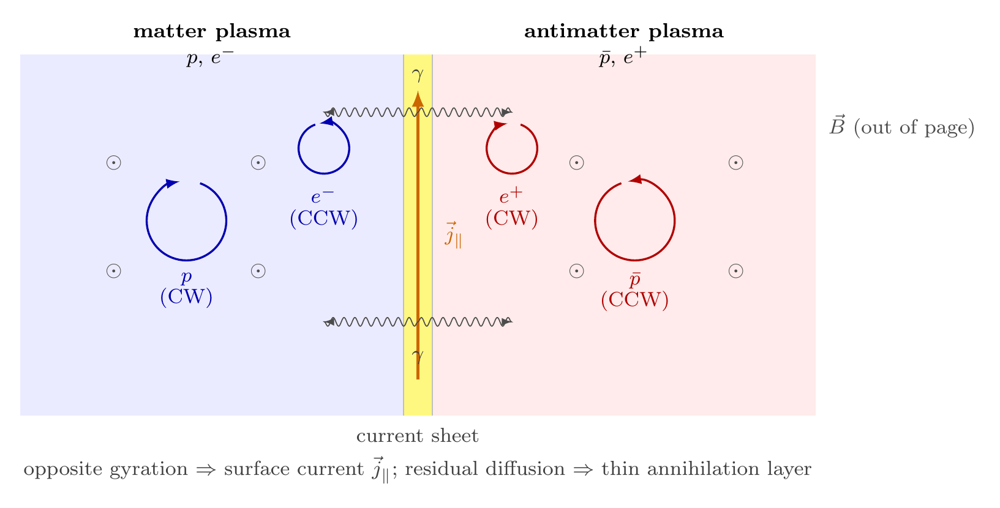
Для вещества и антивещества в полностью контролируемой постановке $P$- и $CP$-связанные поляризационные эффекты могли бы иметь различающиеся знаки или сопряжённые фазовые структуры. Поэтому в принципе можно вообразить неаннигиляционный тест, основанный на измерении знака слабой поляризационной добавки.
Однако это не даёт простого астрофизического критерия: наблюдаемый знак поляризации зависит не только от природы среды, но и от полной геометрии задачи — направления луча, исходной поляризации, магнитного поля, механизма возбуждения, оптической толщины и выбора атомного перехода.
7.2. Гравитационно-линзированные квазары как дифференциальная схема
Более интересный вариант возникает для гравитационно-линзированных поляризованных квазаров. В такой системе один и тот же источник наблюдается в нескольких изображениях, проходящих по разным траекториям через линзирующую галактику или скопление:
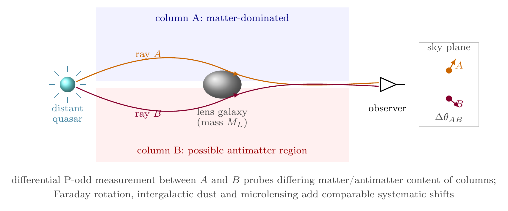
Это частично снимает главную проблему одиночного источника — неизвестную начальную поляризацию. В первом приближении исходный сигнал у изображений один и тот же, а различия можно искать в разностях параметров Стокса:
или в разности углов поляризации:
где $\Delta\chi_{\mathrm{weak}}(\lambda)$ связан с конкретным атомным переходом и имеет известный знак в лабораторной системе отсчёта.
7.3. Почему такой канал пока не является рабочим
Практические препятствия здесь очень жёсткие. Необходимо одновременно:
- яркий поляризованный квазар;
- гравитационная линза с хорошо разделёнными изображениями;
- прохождение одного из лучей через подходящую среду;
- тяжёлые атомы или ионы с заметным $P$-нечётным эффектом;
- узкие спектральные линии;
- известная или восстанавливаемая магнитная геометрия;
- возможность вычесть Фарадеево вращение;
- учёт пыли, рассеяния и микролинзирования;
- достаточная точность спектрополяриметрии.
Главная трудность состоит в том, что обычные поляризационные эффекты значительно превосходят слабую $P$-нечётную добавку:
7.4. Статус поляризационного канала
Поляризационные $P$- и $CP$-нечётные эффекты в принципе могут содержать информацию о различии вещества и антивещества, но для астрофизического применения требуется контролируемый фазовый канал. Гравитационно-линзированные поляризованные квазары могли бы служить естественной дифференциальной схемой, однако необходимые условия настолько жёсткие, что сегодня этот путь остаётся скорее предельным мысленным экспериментом, чем рабочим наблюдательным методом.
7.5. Небесная динамика: гравитационно неразличимые, но аннигиляционно уязвимые
В пределах проверенной точности и стандартной ОТО гравитация не различает вещество и антивещество. Антизвезда притягивает и отталкивает точно так же, как обычная звезда той же массы, а её орбита в галактическом потенциале ничем не выдаёт её природы. Статистика лучевых скоростей, собственных движений и тригонометрических параллаксов в принципе не способна отличить антизвезду от обычной — гравитационные наблюдения здесь слепы.
Тем не менее небесная динамика открывает косвенный канал. Если антизвезда оказывается в плотной звёздной среде — в шаровом скоплении, в плотном молодом рассеянном скоплении или в ядре галактики — вероятность тесного гравитационного сближения с обычной звездой резко возрастает. При формировании гравитационно связанной двойной системы «звезда + антизвезда» перенос масс через точку Лагранжа $L_1$ неизбежен. Любой перетёкший газ немедленно аннигилирует на поверхности компаньона, превращая такую двойную в мощный и компактный гамма-источник с характерным спектром $p\bar{p}$-аннигиляции.
Парадоксально, но именно в тех областях, где звёздная динамика наиболее богата взаимодействиями, антизвезда наименее жизнеспособна. Напротив, в разреженном гало или на крайних окраинах диска антизвезда может существовать практически бессрочно. Этот канал — редкие, но яркие транзиентные события — является естественным дополнением к непрерывному аккреционному сигналу, который ищет .
7.6. Малые тела из антивещества: антикометы и антиастероиды
Обсуждение антиматерных объектов традиционно сосредоточено на антизвёздах. Но логически ничто не запрещает существования малых антиматерных тел — антикомет и антиастероидов, — если они были сформированы в антиматерном регионе на ранних этапах эволюции протопланетного диска антизвезды.
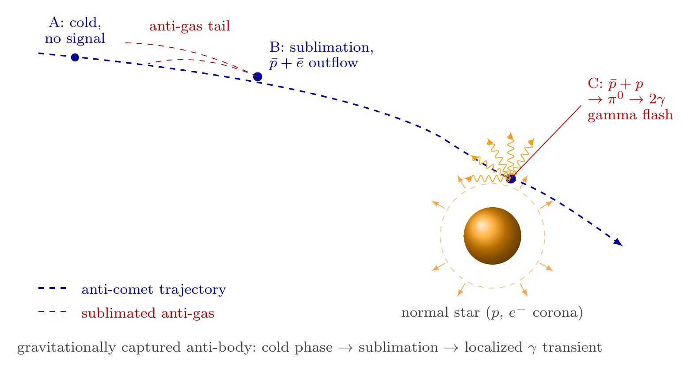
Антикомета в системе собственной антизвезды ведёт себя обычно. Но та же антикомета, заброшенная гравитационными пертурбациями в систему обычной звезды, при прогреве начинает сублимировать антигаз, который немедленно аннигилирует в хромосфере или короне — по характеру сигнала ближе к гамма-вспышке, чем к постоянному источнику. Антиастероид при столкновении с обычным астероидом даёт аннигиляционную энергию поверх кинетической — принципиально отличимо по спектру от обычного импакта. Обратный сценарий — обычная комета на антизвезде — более наблюдаем, чем диффузная аккреция: момент и место аннигиляции локализованы, что позволяет отождествить событие с конкретной орбитой.
7.7. Антиплазменные потоки: зеркальная гирация в магнитном поле
Нейтральная антиплазма — равная смесь антипротонов и позитронов — подчиняется тем же уравнениям МГД, что и обычная плазма: в электрически нейтральном пределе знак заряда носителей не входит в гидродинамические уравнения явно. Поэтому крупномасштабное течение антиплазмы в магнитном поле неотличимо от течения обычной плазмы.
Однако на кинетическом уровне ситуация принципиально иная. Ларморов радиус $r_L = mv_\perp / (|q|B)$ одинаков для частицы и её античастицы при той же скорости и том же поле. Но направление гирации противоположно: антипротон вращается в обратную сторону относительно протона той же жёсткости. Это означает, что для любого направленного потока антизаряженных частиц — джета, звёздного ветра антизвезды, выброса антиплазмы — закрутка вдоль силовых линий поля зеркально противоположна обычной.
Наблюдательные следствия:
Круговая поляризация синхротронного излучения. Знак $V$-параметра Стокса противоположен для электронов и позитронов одинаковой жёсткости. Это один из немногих каналов, где антиматерия могла бы, при известной геометрии магнитного поля и составе излучающих частиц, проявиться через знак поляризационного отклика без прямой аннигиляции. Знак круговой поляризации синхротрона зависит не только от знака заряда, но и от направления поля, направления наблюдения, радиационного переноса и состава плазмы ($e^-p$, $e^+e^-$, $e^+\bar{p}$), поэтому этот маркер работает лишь при известной магнитной геометрии.
Нелинейные пучковые неустойчивости. Пучок антипротонов, влетающий в замагниченную плазму, возбуждает те же циклотронные и вистлерные неустойчивости, что и пучок протонов, но на зеркальных циркулярно-поляризованных модах, что изменяет профиль рассеяния и спектр генерируемых волн.
Магнитное торможение на границе доменов. На контакте плазмы и антиплазмы магнитное поле становится барьером ещё до тепловой аннигиляции: заряженные частицы тормозятся магнитным давлением и образуют тонкий токовый слой, аналогичный магнитопаузе. Это указывает, что простые оценки аннигиляционного потока от границ доменов чувствительны к микрофизике магнитного слоя. Однако само по себе магнитное торможение не снимает космологических ограничений , поскольку требуется не просто уменьшить локальную скорость смешения, а подавить интегральный вклад границ в гамма-фон и CMB-искажения.
7.8. Сводка
| Канал | Что мог бы проверять | Главная проблема | Статус |
|---|---|---|---|
| Атомная $P$-нечётная оптическая активность | знак слабой поляризационной добавки | нет фазового эталона в астрофизической среде | лабораторно осмысленно; астрофизически крайне трудно |
| Гравитационно-линзированные квазары | дифференциальное сравнение нескольких лучей | Фарадеево вращение, пыль, микролинзирование | принципиальная схема; практических пределов нет |
| $P$-нечётный / $CP$-чувствительный фазовый сдвиг | неаннигиляционный маркер вещества/антивещества | нет знания трансформационных свойств при $C$, $P$, $T$ | пока только концептуальный канал |
| Небесная динамика антизвёзд | транзиентные вспышки при двойных системах и тесных сближениях | редкость событий, модельная зависимость | концептуально обоснован; количественно не разработан |
| Антикометы и антиастероиды | импульсные гамма-вспышки при аннигиляции малых тел | нет популяционной модели подтверждённых антизвёзд | теоретически осмысленно; в литературе почти не рассматривалось |
| Антиплазменные потоки в магнитном поле | обратный знак $V$-параметра Стокса; магнитное торможение на границах доменов | неоднозначность знака поляризации без знания магнитной геометрии | физически обоснован; количественно не разработан |
Вывод. Экзотические каналы важны не как готовые методы обнаружения антиматерии, а как указание на принципиально иные типы тестов — без аннигиляции. Магнитно-плазменные эффекты, небесная динамика и малые антиматерные тела расширяют наблюдательную картину за пределы гамма-астрономии.
8. Что остаётся открытым?
Современные наблюдения не подтверждают существование значимых количеств барионной антиматерии в наблюдаемой Вселенной. Гамма-фон ограничивает аннигиляцию на границах доменов; Fermi-LAT ограничивает антизвёзды; антипротоны в основном объясняются вторичным рождением; антидейтерий пока не обнаружен; антигелий остаётся на уровне неподтверждённых кандидатов; CMB+BBN фиксируют барионный остаток $\eta \sim 6\times10^{-10}$.
Но ограничения неодинаковы по силе и зависят от того, какую форму могла бы принимать антиматерия.
8.1. Глобальная антиматерия за горизонтом
Наблюдения исключают не «антиматерию вообще», а значимые количества антиматерии внутри наблюдаемой области при обычных условиях контакта вещества и антивещества. Если гипотетические области антиматерии находятся за пределами наблюдаемого горизонта, они не обязаны давать гамма-сигнал или аннигиляционные следы в нашей области.
Статус: не исключено напрямую, но ненаблюдаемо в обычном смысле.
8.2. Изолированные антидомены внутри горизонта
Классические «лоскутные» модели, где вещество и антивещество образуют контактирующие домены внутри видимого горизонта, сильно ограничены гамма-фоном и CMB. показали, что после рекомбинации избежать аннигиляции на границах таких областей практически невозможно. Но остаётся более узкая возможность: очень редкие, хорошо изолированные области антиматерии, почти не контактирующие с обычным веществом. Такие сценарии требуют специальной космологической динамики.
Статус: обычные доменные модели сильно ограничены; экзотическая изоляция требует отдельного механизма.
8.3. Редкие антизвёзды и компактные антиобъекты
Дисковая популяция антизвёзд сильно ограничена: по анализу 10-летнего каталога Fermi-LAT получен предел $\bar{N}_{\star}/N_{\star} < 2{,}5\times10^{-6}$ при 95\% CL . Но ограничения на компактные антиобъекты остаются модельно-зависимыми: объект в разреженной среде, движущийся быстро, слабо аккрецирующий или расположенный в гало, может быть значительно менее заметен.
Статус: обычная дисковая популяция сильно ограничена; редкие компактные объекты в гало остаются менее жёстко закрытыми.
8.4. Антигелий и тяжёлые антиядра
Антипротоны не являются чистым маркером макроскопической антиматерии. Антидейтерий и особенно антигелий значительно информативнее, поскольку их вторичное производство резко подавлено. Антидейтерий не обнаружен, антигелиевые кандидаты AMS-02 не имеют статуса подтверждённого открытия. Если $\overline{{}^3\mathrm{He}}$ или $\overline{{}^4\mathrm{He}}$ будут надёжно подтверждены, это станет серьёзным вызовом стандартной картине.
Статус: один из главных открытых наблюдательных каналов; подтверждённого открытия пока нет.
8.5. Лептонная и нейтринная асимметрия
Барионная асимметрия измерена намного жёстче, чем возможная лептонная. Если Вселенная в целом электрически нейтральна, большая скрытая лептонная асимметрия должна находиться в нейтринном секторе. Современные обзоры подчёркивают, что лептонная асимметрия пока ограничена значительно слабее барионной и может быть намного больше неё .
Статус: барионная часть хорошо измерена; лептонная/нейтринная часть остаётся существенно менее определённой.
8.6. Модельная зависимость CMB+BBN
CMB+BBN дают высокоточную оценку барионной плотности, но не являются прямым экспериментом по поиску антиматерии. Их интерпретация опирается на стандартную горячую космологию, $\Lambda$CDM, стандартную рекомбинацию и выбранные ядерные скорости реакций. Они отвечают на вопрос «какова эффективная барионная плотность?», но не на вопрос «существуют ли редкие изолированные антиобъекты?».
Статус: очень сильный космологический бариометр, но не прямой канал поиска удалённой антиматерии.
8.7. Экзотические неаннигиляционные тесты
Возможны принципиальные идеи, не сводящиеся к гамма-излучению от аннигиляции: поляризационные $P$- и $CP$-нечётные эффекты в атомной среде. Гравитационно-линзированные поляризованные квазары могли бы дать естественную дифференциальную схему, но её практическая реализация требует почти лабораторно контролируемой астрофизической конфигурации.
Статус: принципиально интересно; практических пределов на антиматерию нет.
8.8. Сводная таблица открытых вопросов
| Вопрос | Современный статус |
|---|---|
| Есть ли сравнимые количества антиматерии внутри наблюдаемой Вселенной? | Обычные сценарии сильно ограничены гамма-фоном, CMB и отсутствием аннигиляционных следов |
| Возможны ли антидомены за горизонтом? | Наблюдательно не проверяется напрямую |
| Возможны ли изолированные антидомены внутри горизонта? | Требуют специального механизма изоляции; обычные доменные модели практически закрыты |
| Возможны ли редкие антизвёзды? | Дисковая популяция ограничена: $\bar{N}_{\star}/N_{\star} < 2{,}5\times10^{-6}$; гало / компактные сценарии слабее ограничены |
| Что значит антигелий AMS-02, если подтвердится? | Потенциально серьёзный вызов стандартному вторичному происхождению антиядер |
| Закрыта ли лептонная асимметрия? | Нет; нейтринная / лептонная асимметрия ограничена намного слабее барионной |
| Является ли CMB+BBN прямым доказательством отсутствия антиматерии? | Нет; это модельно-зависимый бариометр |
| Есть ли неаннигиляционные тесты? | Концептуально возможны; практически не реализованы \\ |
8.9. Итог
Современная наблюдательная картина сильно ограничивает макроскопическую антиматерию в наблюдаемой Вселенной, но делает это не одним универсальным тестом, а совокупностью каналов. Наиболее жёстко закрыты сценарии, где вещество и антивещество заметно контактируют: границы доменов, смешанная плазма, многочисленные антизвёзды в диске. Слабее закрыты редкие компактные антиобъекты, гало-популяции, экзотически изолированные области и возможная нейтринная/лептонная асимметрия.
Наблюдаемая Вселенная с высокой степенью надёжности не содержит сравнимых количеств барионной антиматерии в формах, которые обычным образом взаимодействуют с веществом. Но редкие, компактные, плохо аккрецирующие или находящиеся за пределами наблюдаемого горизонта формы антиматерии не исключаются столь же прямолинейно. Отдельно остаётся открытым вопрос о возможной большой лептонной — прежде всего нейтринной — асимметрии ранней Вселенной.
9. Заключение
Современная наблюдательная картина устроена не как единый универсальный тест отсутствия антиматерии, а как совокупность каналов, каждый из которых закрывает свой класс сценариев. Гамма-фон ограничивает крупномасштабную аннигиляцию и не оставляет места для обычной лоскутной структуры доменов внутри наблюдаемого горизонта; антипротоны в основном объясняются вторичным происхождением; антиядра тяжелее протона остаются на уровне неподтверждённых кандидатов; Fermi-LAT жёстко ограничивает дисковую популяцию антизвёзд; CMB+BBN фиксируют барионный остаток $\eta \sim 6\times10^{-10}$. Каждый канал несёт собственные модельные предположения, и их совмещение — более надёжное основание, чем любой отдельный тест.
Уверенно закрыты сценарии, в которых вещество и антивещество заметно контактируют. Слабее закрыты редкие компактные антиобъекты в гало, изолированные антидомены, антиматерия за пределами наблюдаемого горизонта и возможная большая лептонная/нейтринная асимметрия — последняя ограничена слабее барионной на много порядков.
9.1. Структурное наблюдение: канонические работы и возраст фактологии
Многие из приведённых выше ограничений опираются на работы десяти– и пятнадцатилетней давности. Это не следствие выборки источников — такое положение дел структурно характерно для самого поля. Канонические работы остаются каноническими не потому, что особенно хороши, а потому, что их некому замещать.
Часть «возраста» объясняется естественно: фундаментальные теоретические аргументы ( о невозможности обычной доменной структуры внутри горизонта, общая постановка задачи в ) по природе не подлежат «обновлению» — рассуждение либо верно, либо нет. Финальные данные миссии Planck и закрытая база IGRB тоже не сменяются: миссия завершена, дополнительной точности ждать неоткуда.
Часть — следствие того, что характерные неопределённости в работающих экспериментах перешли из статистических в систематические. AMS-02 непрерывно набирает статистику, опубликована серия новых работ по антипротонам за полный солнечный цикл , но форма ключевой кривой $\bar p/p$ как функции жёсткости — плато выше $\sim60\,\text{ГВ}$ — остаётся такой же, как и в исходной публикации 2016 года . Современные propagation-модели уточняют ожидаемый астрофизический фон, но не меняют качественной картины: антигелий выше уровня $\sim10^{-2}$ относительно ожидания требует выхода за стандартные коалесцентные модели.
Часть — следствие отсутствия независимых программ. Систематический поиск антизвёзд по Fermi-LAT с 2021 года поддерживается единственной группой . После 2021 г. — только конференционные обновления тех же авторов. Школы, конкурирующих независимых анализов или альтернативных методологий не сложилось.
9.2. Что появилось в 2024--2026 годах
Свежие результаты есть, но они либо уточняют существующую картину, либо подтверждают сложность задачи, а не меняют статус.
BBN. расширили маргинализацию по ядерным скоростям; центральная барионная плотность $\Omega_b h^2 = 0{,}02218 \pm 0{,}00055$ согласуется с CMB-определением, но неопределённости остаются доминированными ядерной физикой, а не астрофизическими измерениями.
Нейтринный сектор. решили полные QKE для нейтрино с лептонной асимметрией в формализме замкнутого временного контура. Полученное ограничение $\xi_\nu = 0{,}024 \pm 0{,}012$ из совмещения EMPRESS BBN + Planck CMB + BOSS BAO — это улучшение оценки на $\sim 30\%$ относительно предыдущей литературы, но порядок остаётся прежним: нейтринная асимметрия может быть на 7–8 порядков больше барионной и не входить в противоречие с наблюдениями.
AMS-02 и антигелий. Кандидаты по ${}^3\overline{\mathrm{He}}$ и ${}^4\overline{\mathrm{He}}$ продолжают оставаться кандидатами. На конференционных докладах 2024–2025 годов коллаборация подтверждает, что массив требует пересмотра моделей, но статьи с заявленным открытием нет. Срок работы AMS-02 продлён до конца жизни МКС (ca. 2030).
GAPS. Первый антарктический полёт состоялся 16 декабря 2025 – 9 января 2026 . Публикация анализа ожидается; запланировано ещё два полёта.
9.3. Прецизионное будущее: ожидания и реальность
Программа «прецизионных наблюдений следующего десятилетия» оказалась менее устойчивой, чем планировалось.
CMB-S4. В июле 2025 года Министерство энергетики и Национальный научный фонд США отказали проекту в дальнейшей поддержке; коллаборация ведёт organized shutdown . Это означает, что отдельной программы CMB-S4 уровня $\Delta N_{\mathrm{eff}} \leq 0{,}06$ в обозримое десятилетие не будет. Перспективы $N_{\mathrm{eff}}$, $Y_p$ и связанных ограничений на лептонную асимметрию через CMB остаются за Simons Observatory и South Pole Observatory — с менее агрессивными требованиями к систематике и без отдельной целевой программы по светлым реликтам.
Антинуклеиды. GAPS даст первый независимый низкоэнергетический канал, дополняющий AMS-02 в принципиально другой энергетической области. Это качественно меняет картину если потоки ${}^3\overline{\mathrm{He}}$ окажутся на уровне выше ожидаемого астрофизического фона; в противном случае — даёт жёсткие верхние пределы.
Антизвёзды. Накопление данных Fermi-LAT продолжается, но ожидать существенного уточнения $\bar{N}_{\star}/N_{\star} < 2{,}5\times10^{-6}$ не приходится: ограничение давно зависит от модели аккреции и от неоднозначности классификации низкоширотных гамма-источников, а не от объёма данных.
Лептонная асимметрия. Реальные надежды связаны с прецизионным $Y_P$ от EMPRESS и его наследников, а также с уточнением нейтринного транспорта, а не с CMB-измерениями $N_{\mathrm{eff}}$.
9.4. Финальная позиция
Современная картина не доказывает «абсолютное отсутствие антивещества». Она доказывает более конкретное:
В пределах наблюдаемой Вселенной не обнаружено сравнимых с веществом количеств барионной антиматерии в формах, которые обычным образом контактируют с веществом. Редкие, компактные, плохо аккрецирующие или находящиеся за пределами наблюдаемого горизонта формы антиматерии не исключаются столь же прямолинейно. Открытым остаётся вопрос о возможной большой лептонной — прежде всего нейтринной — асимметрии ранней Вселенной.
Вторичный, но методологически существенный вывод — структурный. Поле находится в фазе медленного накопления статистики на ограниченном наборе экспериментов, без концептуальных сдвигов и без новых независимых наблюдательных программ, нацеленных непосредственно на проблему барионной асимметрии. Прецизионные наблюдения следующего десятилетия будут проверять ту же теоретическую конструкцию, а не сменять её. Это не неудача наблюдательной физики — это её честное состояние, которое имеет смысл фиксировать прямо, а не растворять в формуле «захватывающих перспектив».
Список литературы
Раздел 1: Гамма
- [Ackermann et al.(2015)] Ackermann,~M. et al.\ (Fermi-LAT Collaboration). The Spectrum of Isotropic Diffuse Gamma-Ray Emission between 100\,MeV and 820\,GeV. Astrophys.\ J.\ 799, 86 (2015). arXiv:1410.3696
- [von~Ballmoos(2014)] von~Ballmoos,~P. Antimatter in the Universe: Constraints from Gamma-Ray Astronomy. Hyperfine Interact.\ 228, 91--100 (2014). arXiv:1401.7258
- [Cohen et al.(1998)] Cohen,~A.~D., De~R\'ujula,~A., Glashow,~S.~L. A Matter of Antimatter. Astrophys.\ J.\ 495, 539--549 (1998). arXiv:astro-ph/9707087
- [Steigman(1976)] Steigman,~G. Observational Tests of Antimatter Cosmologies. Annu.\ Rev.\ Astron.\ Astrophys.\ 14, 339--372 (1976).
- [Steigman(2008)] Steigman,~G. When Clusters Collide: Constraints on Antimatter on the Largest Scales. J.\ Cosmol.\ Astropart.\ Phys.\ 2008(10), 001 (2008). arXiv:0808.1122.
Раздел 2: Антипротоны
- [Adriani et al.(2010)] Adriani,~O. et al.\ (PAMELA Collaboration). PAMELA Results on the Cosmic-Ray Antiproton Flux from 60\,MeV to 180\,GeV in Kinetic Energy. Phys.\ Rev.\ Lett.\ 105, 121101 (2010). arXiv:1007.0821
- [Aguilar et al.(2016)] Aguilar,~M. et al.\ (AMS Collaboration). Antiproton Flux, Antiproton-to-Proton Flux Ratio, and Properties of Elementary Particle Fluxes in Primary Cosmic Rays Measured with the Alpha Magnetic Spectrometer on the International Space Station. Phys.\ Rev.\ Lett.\ 117, 091103 (2016).
- [Aguilar et al.(2025)] Aguilar,~M. et al.\ (AMS Collaboration). Antiproton Fluxes over a Complete Solar Cycle Measured by AMS on the International Space Station. Phys.\ Rev.\ Lett.\ (2025). https://www.osti.gov/biblio/2510921.
- [Heisig et al.(2021)] Heisig,~J. et al. Cosmic-Ray Antiprotons from Dark Matter Annihilation: Generalizing the Constraints for Correlated Systematic Uncertainties. Phys.\ Rev.\ D\ 104, 063014 (2021). arXiv:2012.03956.
Раздел 3: Антиядра
- [AMS Collaboration(2013)] AMS Collaboration. AMS-02 Results at the ICRC 2013: Antihelium Candidates. Proc.\ 33rd ICRC, contribution 0932, Rio de Janeiro (2013).
- [Aramaki et al.(2024)] Aramaki,~T. et al.\ (BESS-Polar Collaboration). Search for Cosmic-Ray Antideuterons with BESS-Polar\,II. Phys.\ Rev.\ Lett.\ 132, 131001 (2024).
- [von~Doetinchem et al.(2020)] von~Doetinchem,~P. et al. Cosmic-Ray Antinuclei as Messengers of New Physics: Status and Outlook for the New Decade. J.\ Cosmol.\ Astropart.\ Phys.\ 2020(08), 035 (2020). arXiv:2002.04163
- [De~La~Torre~Luque et al.(2024)] De~La~Torre~Luque,~P., Gammaldi,~V., Korsmeier,~M., Cuoco,~A., Krmsm,~M., Edsj{\"o,~J. Cosmic-Ray Propagation Models Elucidate the Prospects for Antinuclei Detection. J.\ Cosmol.\ Astropart.\ Phys.}\ 2024(10), 017 (2024). arXiv:2404.13114
- [GAPS Collaboration(2026)] GAPS Collaboration. First Antarctic Balloon Flight of the GAPS Experiment, December 2025 -- January 2026: Status and Preliminary Observations. Proc.\ ICRC 2025 / lecture note, University of Hawaii (2026). https://www.phys.hawaii.edu/~philipvd/2604_uhm_pvd.pdf.
- [Poulin et al.(2019)] Poulin,~V., Salati,~P., Cholis,~I., Kamionkowski,~M., Silk,~J. Where do the AMS-02 Antihelium Events Come From? Phys.\ Rev.\ D\ 99, 023016 (2019). arXiv:1808.08961.
Раздел 4: Нейтринный канал
- [Arg\"uelles et al.(2021)] Arg\"uelles,~C.~A. et al. Snowmass White Paper: New Directions in Dark Matter Searches with Neutrino Telescopes. Rev.\ Mod.\ Phys.\ 93, 035007 (2021).
- [Lattanzi \& Moretti(2024)] Lattanzi,~M., Moretti,~G. Leptonic Asymmetry of the Universe. Symmetry\ 16(12), 1657 (2024). https://doi.org/10.3390/sym16121657.
- [Li \& Yu(2025)] Li,~Y.-Z., Yu,~J.-H. Primordial Lepton Asymmetries: Neutrino Transport, Spectral Distortions and Cosmological Constraints. J.\ High Energy Phys.\ 06, 213 (2025). arXiv:2409.08280.
Раздел 5: Антизвёзды
- [Blinnikov et al.(2015)] Blinnikov,~S.~I., Dolgov,~A.~D., Postnov,~K.~A. Antimatter and Antistars in the Universe and in the Galaxy. Phys.\ Rev.\ D\ 92, 023516 (2015). arXiv:1409.5736
- [Bondar et al.(2022)] Bondar,~N.~F. et al. X-Ray Signatures of Antistars. Phys.\ Rev.\ D\ 106, 063015 (2022). arXiv:2109.12699
- [Dupourqu\'e et al.(2021a)] Dupourqu\'e,~S., Tibaldo,~L., von~Ballmoos,~P. Constraints on the Antistar Fraction in the Solar System Neighborhood from the 10-year Fermi Large Area Telescope Gamma-Ray Source Catalog. Phys.\ Rev.\ D\ 103, 083016 (2021). arXiv:2103.10073
- [Dupourqu\'e et al.(2021b)] Dupourqu\'e,~S., Tibaldo,~L., von~Ballmoos,~P. Constraints on the Antistar Population from the 4FGL Catalog. PoS(ICRC2021)\ 395, 613 (2021).
Раздел 6: CMB + BBN
- [Planck Collaboration(2020)] Aghanim,~N. et al.\ (Planck Collaboration). Planck 2018 Results. VI. Cosmological Parameters. Astron.\ Astrophys.\ 641, A6 (2020). arXiv:1807.06209
- [Cyburt et al.(2016)] Cyburt,~R.~H., Fields,~B.~D., Olive,~K.~A., Yeh,~T.-H. Big Bang Nucleosynthesis: Present Status. Rev.\ Mod.\ Phys.\ 88, 015004 (2016). arXiv:1505.01076
- [Yeh et al.(2024)] Yeh,~T.-H. et al. Probing Nuclear Reaction Rates in Big Bang Nucleosynthesis. J.\ Cosmol.\ Astropart.\ Phys.\ 2024(10), 046 (2024). arXiv:2401.15054.
Раздел 9: Перспективы
- [CMB-S4(2025)] CMB-S4 Project Collaboration. Revised CMB-S4 Project Plan. Joint DOE/NSF statement of 9 July 2025; project status: organized shutdown (2025). https://cmb-s4.org.